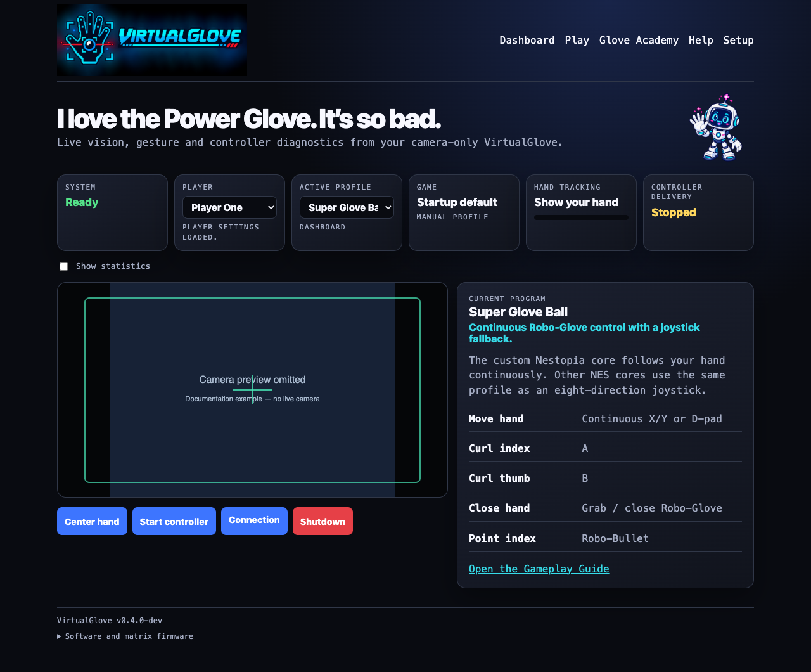
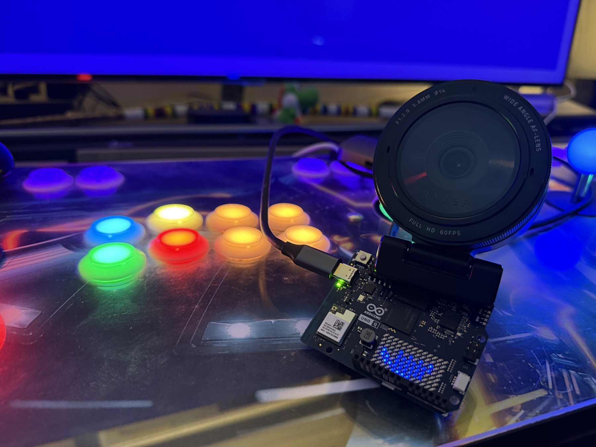

RetroPie
Use VirtualGlove as a separate controller or opt into Controller Router for a cabinet-style merged setup.
@@RELEASE_LABEL@@
VirtualGlove uses an ordinary USB camera and an Arduino UNO Q to turn movement and gestures into responsive retro-game controls. Nothing electronic goes on your hand.
@@RELEASE_NOTE@@

Four supported platforms
Use VirtualGlove as a separate controller or opt into Controller Router for a cabinet-style merged setup.
Merge configured physical controllers into Players 1–4 while keeping EmulationStation navigation familiar.
Preserve frontend mappings and carry routed physical controls through Libretro games.
Keep physical XInput and add VirtualGlove through a guarded local RetroArch input route.
See it working
VirtualGlove began at a real home arcade cabinet. The Controller and camera track the player locally, then send authenticated controls to the game system.

Joystick mode
A saved centre box creates directions and diagonals. Gestures provide A, B, Start, Select, Menu Guard, and the controls documented for each program.
Native mode
Nestopia (VirtualGlove) receives native X/Y and depth movement with grab, throw, fire, and Power Punch. FCEUmm remains available as a joystick fallback.
Meet Pixel Pal
Sixteen guided lessons show how VirtualGlove recognises your hand movements and gestures, then help you practise directions, finger controls, rolls, push, pull, Start, Select, and Menu Guard. Each player keeps their own centre, reach, dead zone, tuning, and progress.
Private by design
Video is processed on the Controller and is not transmitted to the console.
Paired devices sign controller traffic and return safely to neutral when input is lost.
A real joypad remains available for menus, recovery, and ordinary play.